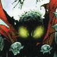

Joué par :
kanaizhar Joué par :
[ Information masquée ] Lieu de naisance : Caveau du Gla
Signe de naissance : Inconnu
Sexe : Homme
Race : Mort-vivant
Faction : Horde
Formation : Mage
Guilde : Arpenteurs Artisanat 1 : Couturier
Artisanat 2 : Enchanteur
Informations hrp : kanizhar a pris vie, dés le premier jour de world of warcraft.
Il est l'un des protagonistes de la réunion et création de la guilde Arpenteurs.
Ils ont arpenté bien des zones et des instances de Ragefeu à Naxx.
Maintenant que de nouvelles terres sont à découvrires ils repartent arpenter.
(joueur semi-Rpiste et disponible en soirée et week-end, hors vie réelle)
Description : Kanizhar n'a plus une grande mémoire de ces souvenirs qui s'effacés au fil des temps, quelques brides parfois le submergent et lui font apparaîtes des images qu'il considère comme sont passer, mais lui appartiennes t'il ?
Actuellement il est marier à une voleuse Trollesse à fort caractère et elle est le seul lien à ce monde qu'il lui reste, ainsi que ça famille, ça guilde (les) Arpenteurs.
Dixième Ère [1]
Lune de la Force
Décade du Panda
Décade du Gorille
Décade de l'Ours
Lune d'Agilité
Décade du Tigre
Décade du Singe
Décade du Faucon
Lune de l'Esprit [1]
Décade de la Chouette
Décade de la Baleine [1]
L'heure de la délivrance
Un cri retentit en pleine nuit sombre sur l'île du Bastion de Feathermonn en terres de Feralas, un cri de cauchemar d'un jeune humain, celui-si se leva brusquement, en sueur, tremblant de terreur, ne comprennent pas ce qu'il lui arrive, il ce mi à courir dans des dédales de couloirs et pièces puis fais irruption dans une autre chambre.
« Maître, maître, maître !!!. »
Il secoue un homme dans un grand lit, celui-si se réveilla calmement et sens panique, le contraire du jeune homme.
« Que se passe t'il mon jeune apprenti ? »
« Maître j'ais fait un effroyable cauchemar »
Voyant son jeune apprenti, Merzhin, se leva puis assis son jeune apprenti à c'est cotes.
« Calme-toi, comment un cauchemar pourrait t'il, te mettre dans de tel état, raconte moi tout. »
Le jeune apprenti commence à raconter les images de sont rêve effrayant.
« Tout commence dans une lointaine contrée d'où je ne redonnai pas les lieux, un homme se leva et puis d'un geste détruisit toute vie, des cris, des gémissements, des souffrances »
Le jeune Iiyan, continua l'explication pendant des heures sens oublier le moindre détail, ce qui frappa Merzhin, c'est l'exactitude des détails et l'enchaînement des évènements.
Quand le jeune Iiyan, fini, Merzhin, lui dit d'aller ce coucher pour oublier tout cela qu'un cauchemar n'a rien d'événementiel dans la ligne des équilibres des Arcanes. Il raccompagne le jeune apprenti, l'aide à se coucher, puis se dirige vers une autre salle, cette salle baignai dans une douce lumière, où il n'y avait aucune source de lumière, pas de bougie et qu'il fait pleine nuit, une pièce ou sur des étagères des vieux livres, des objets aux formes et aux couleurs peut naturel, avec un grand brasero se dressent au centre de la pièce, Merzhin se dirige vers celui-ci. Puis il commence à murmurer des paroles qui aux oreilles d'un simple humain serait incompressibilité.
Puis après quelque instant, Merzhin se tut.
Un long silence, puis un courant d'air glacial, commence à s'emparer de la pièce, il n'y a aucune ouverture dans la pièce, sauf la porte qui est fermer. Et une voie dans la Tête retentie comme venant d'un autre monde.
« Si tu cherche des explications sur cela, tu n'en trouveras point, ce qui doit venir, viendra et ce qui doit mourir, moura, rien, ni même vous, ne pourrez empêcher, puis la voie disparue »
Le courant d'air glacial disparu et les bruits de la nuit reprirent leur cour.